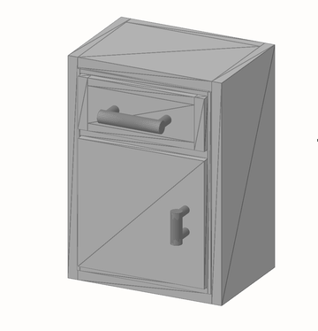
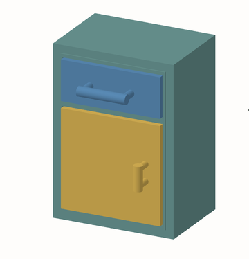
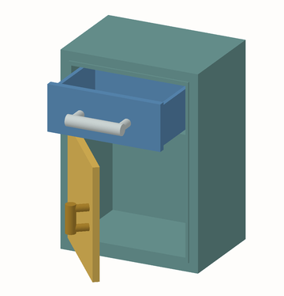
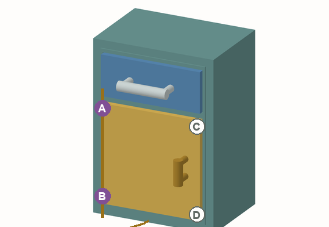
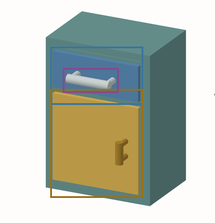
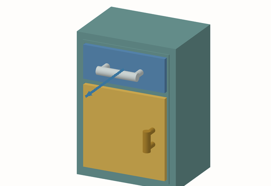
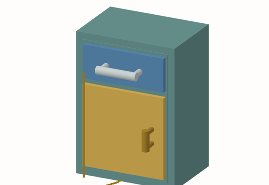
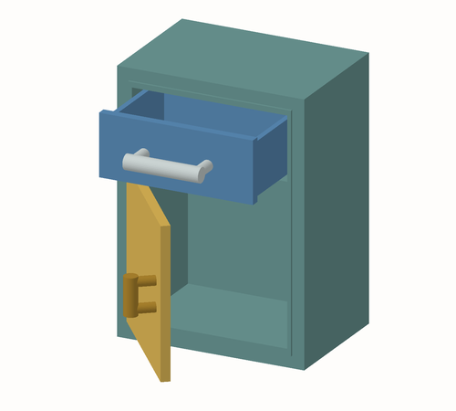

3.6 Automatically build articulated models
An articulated cabinet needs separate parts and joints: the drawer slides relative to the body, and the door rotates around a hinge. Research methods can help infer this structure. Articulate AnyMesh starts with a 3D mesh; URDFormer starts with an image and detected part locations.
The links and joints introduced in Section 3.1 are the information these methods aim to recover. We follow the same cabinet through each method’s input, processing steps, output, and checks.
3.6.1 Articulate AnyMesh: from a mesh to moving parts
Articulate AnyMesh[1] adds part identities and joints to an existing 3D object. It combines a vision-language model (VLM), part-segmentation tools, and geometry calculations. The project page shows the authors’ results.
Input
A cabinet mesh. Its surfaces already describe the cabinet’s shape. This mesh could come from an editor, a generator such as TRELLIS or Hunyuan3D, or surface reconstruction such as the 2DGS mesh extraction in Section 2.8.
Articulate AnyMesh: from a mesh to moving parts
- 01Cabinet mesh

Existing surfaces before adding movement. - 02Identify parts and joints

VLM judgments and geometry calculations locate parts and their movement. - 03Articulated asset

The drawer slides; the door rotates. Shape and appearance are also refined.
Processing steps
- Identify and separate parts. GPT-4o[2] interprets rendered views of the mesh. A part-segmentation pipeline, PartSlip++[3], combines detections and masks from several views into 3D part groups.
- Propose the movement structure. GPT-4o uses the recognized object and parts to propose parent–child connections and joint types, such as a sliding drawer and a hinged door.
- Locate the motion axes. Geometry calculations and further model judgments determine where those movements take place, as illustrated below.
- Refine the asset. A diffusion-based method, RichDreamer[4], helps refine shape and appearance across different joint positions. The paper’s method section describes these components.
How the drawer and door get their joints
First choose a type of movement; then locate its axis. A sliding joint needs a direction. A rotating joint needs both the direction and position of its hinge line.
The drawer. GPT-4o proposes a sliding joint and classifies its movement as inward/outward. The program fits a plane to the region where the drawer and body are close together, then uses the direction perpendicular to that plane as the sliding axis. On this cabinet, that gives the direction through the front opening.
The door. GPT-4o proposes a rotating joint. The program marks candidate 3D points on a rendered view; the model selects points likely to lie on the hinge. A line fitted through the selected points becomes the estimated rotation axis. On this cabinet, the intended axis runs vertically along the door’s left edge. The published prompts show the judgments requested from GPT-4o.
Choose a joint, then locate its axis
Articulate AnyMesh

Selected candidates A and B lie along the left hinge.Output
An articulated 3D asset: part geometry with estimated connections and joint information. The project’s robot demonstration exports this structure as a URDF with part meshes. As in Section 3.4, the URDF describes the links and joints, while the mesh files describe their shapes.
What to check
Move the drawer and door through their intended ranges. Check the part boundaries, sliding direction, hinge location, and the hidden surfaces exposed by opening them. Each fixed handle should move with its drawer or door. Section 3.5 illustrates how changes to the joint or mesh affect movement.
3.6.2 URDFormer: from an image to an assembled model
URDFormer[5] combines a part detector, a trained structure-prediction network, and assembly rules. Its network learns from paired images and scene descriptions. At use time, the predictions select and arrange prepared meshes in a URDF model. The project page shows single objects and larger scenes.
Input
A cabinet image and bounding boxes around its visible parts. A bounding box is a rectangle marking a part’s location in the picture. The pipeline’s detector supplies these boxes—for example, around a drawer or handle—and URDFormer uses them together with the image.
URDFormer: from an image to an assembled model
- 01Image + part boxes

Detected rectangles locate visible parts in the picture. - 02Predict, then assemble
- Predicted drawer category
- Select a drawer mesh
- Position, size, parent
- Place it in the upper cabinet body
Program rules assign the category’s joints and write the URDF.
- 03URDF + part meshesA proposed 3D arrangement with movable parts.
Processing steps
- Locate the visible parts. A fine-tuned Grounding DINO[6] detector supplies boxes for image regions such as the drawer, door, and handles.
- Predict the structure. The URDFormer network uses the image and boxes to predict each part’s mesh category, position, size, and parent. For the drawer, these describe which prepared shape to use and where it belongs in the cabinet.
- Assemble the model. The program selects and places the meshes, then applies category-specific rules for their joints. These rules and a URDF template create the linked model. See the paper’s pipeline description.
How the drawer and door get their joints
The network predicts a part category; the program assigns that category’s joint. In the released implementation, the available categories distinguish drawers and different door-opening arrangements.
The drawer. A prediction of the drawer category selects a prepared drawer mesh. The program assigns a sliding joint and the preset sliding axis in that part’s coordinate system. Placing the part in the cabinet places this axis with it, giving the outward direction shown below.
The door. A prediction of the appropriate door category selects its prepared door shape and opening arrangement. The program assigns a rotating joint and a preset local hinge axis. The part placement and category-specific setup locate that hinge in the cabinet. For our example, the intended result is a vertical hinge at the left edge. These mappings are explicit in the official assembly code.
Predict a category, then apply joint rules
URDFormer

The preset local axis moves with the placed drawer.
The preset hinge is located with the selected door arrangement.Output
A URDF scene with referenced part meshes. For the cabinet, this is a proposed arrangement of a body, drawer, door, and handles that can be loaded into a simulator. Its shape depends on the available mesh collection and the predicted sizes and positions.
What to check
Check that the detector found the relevant parts, that the chosen meshes fit the cabinet, and that the drawer and door move without unwanted overlaps. Physical properties such as mass and friction are supplied during simulation preparation in Section 4.2.
3.6.3 Two routes to an articulated cabinet
| Stage | Articulate AnyMesh | URDFormer |
|---|---|---|
| Input | An existing 3D mesh. | An image and detected part boxes. |
| Part geometry | Separate and refine the supplied mesh. | Select, size, and place prepared meshes. |
| Model predictions | Part identities, connections, joint types, and judgments such as which points mark a hinge. | Part categories, positions, sizes, and parent relationships. |
| Program calculations and rules | Fit a sliding direction or hinge line using geometry and the model’s choices. | Assign category-specific joint types and local axes, then place the parts. |
| Output | An articulated asset; the project demonstrates URDF export. | An assembled URDF scene with its part meshes. |
For a cabinet mesh already created in Chapter 2, Articulate AnyMesh provides a route to adding articulation. For a cabinet photograph, URDFormer provides a route to assembling an articulated model from prepared parts. Both aim to produce a structure whose parts can move relative to one another.
The models have different jobs
In Articulate AnyMesh, GPT-4o supplies part and joint judgments; segmentation models locate the corresponding surfaces; RichDreamer supplies shape and appearance priors during refinement.
In URDFormer, Grounding DINO combines image features and text labels to locate parts. This is a vision-language detection task. The separate URDFormer network predicts the structure, and the assembly program supplies the category-specific joints. Detection, structure prediction, and joint assembly are distinct jobs.
The URDFormer project also uses Stable Diffusion[7] to help create training images, and its released workflow offers optional texture preparation. These image-generation steps concern appearance. The joint structure follows the prediction and assembly steps above. See the implementation notes.
Inspect the cabinet’s connections

URDF records the connections and joints. Part mesh files supply the visible shapes.
To use the asset in a robot experiment, continue with contact shapes and physical properties in Section 4.2, then the robot and controller in Section 4.4. The Articulate AnyMesh project example connects reconstruction, articulation, and robot motion planning.
References
- Xiaowen Qiu, Jincheng Yang, Yian Wang et al. Articulate AnyMesh: Open-Vocabulary 3D Articulated Objects Modeling. arXiv preprint arXiv:2502.02590, 2025. arXiv
- OpenAI, Aaron Hurst, Adam Lerer et al. GPT-4o System Card. arXiv preprint arXiv:2410.21276, 2024. arXiv
- Yuchen Zhou, Jiayuan Gu, Xuanlin Li et al. PartSLIP++: Enhancing Low-Shot 3D Part Segmentation via Multi-View Instance Segmentation and Maximum Likelihood Estimation. arXiv preprint arXiv:2312.03015, 2023. arXiv
- Lingteng Qiu, Guanying Chen, Xiaodong Gu et al. Richdreamer: A generalizable normal-depth diffusion model for detail richness in text-to-3d. Proceedings of the IEEE/CVF Conference on Computer Vision and Pattern Recognition, 2024.
- Zoey Chen, Aaron Walsman, Marius Memmel et al. URDFormer: A Pipeline for Constructing Articulated Simulation Environments from Real-World Images. arXiv preprint arXiv:2405.11656, 2024. arXiv
- Shilong Liu, Zhaoyang Zeng, Tianhe Ren et al. Grounding dino: Marrying dino with grounded pre-training for open-set object detection. arXiv preprint arXiv:2303.05499, 2023. arXiv
- Robin Rombach, Andreas Blattmann, Dominik Lorenz et al. High-Resolution Image Synthesis with Latent Diffusion Models. arXiv preprint arXiv:2112.10752, 2022. arXiv